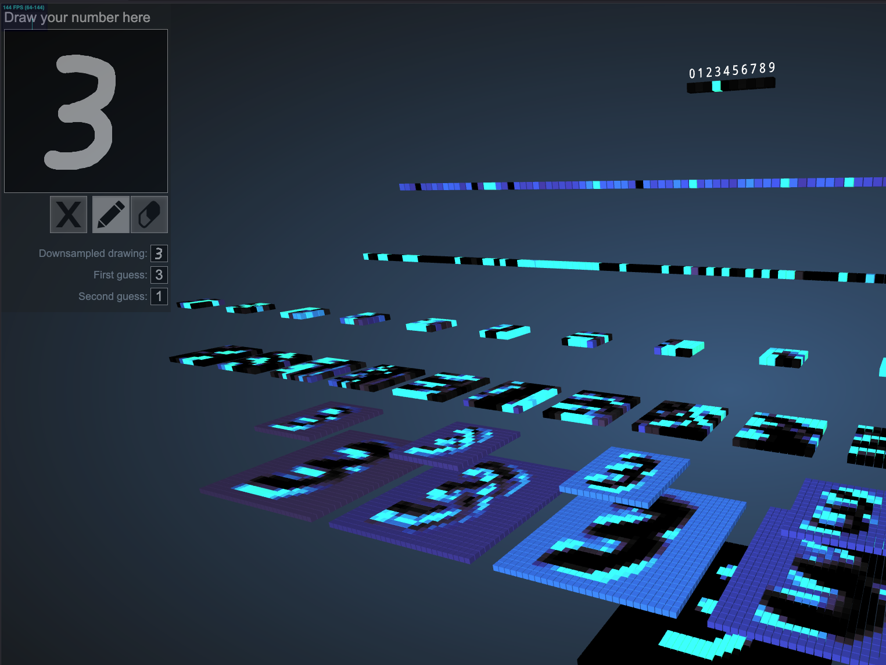

9. An Introduction to Deep Learning#
Why Deep Learning?
Automatic feature extraction from raw data.
Scales to large datasets.
Can approximate any continuous function (Universal Approximation Theorem).
Applications in Basic Sciences:
Physics: Predicting particle trajectories.
Chemistry: Predicting molecular properties.
Biology: Classifying cells in microscopy images.
Quick Links
9.1. Historical Overview: The Rise of Neural Networks#
9.1.1. 1940s–1950s: Birth of the Perceptron#
1943: McCulloch & Pitts propose a computational model of neurons.
1958: Frank Rosenblatt introduces the Perceptron — a single-layer neural network.
Could classify linearly separable data.
Limited by the XOR problem (Minsky & Papert, 1969).
“The Perceptron is the first machine learning model capable of learning from data.”
9.1.2. 1980s–1990s: Backpropagation and the First Wave#
1986: Rumelhart, Hinton & Williams publish backpropagation algorithm — enabling training of multi-layer networks.
1989: LeCun et al. apply CNNs to handwritten digit recognition (MNIST precursor).
Limitations: Lack of data, weak compute power → Neural networks fall out of favor.
9.1.3. 2000s–2010s: The Deep Learning Revolution#
2006: Hinton et al. introduce deep belief networks and the term “Deep Learning”.
2012: AlexNet (Krizhevsky, Sutskever, Hinton) wins ImageNet with CNN + ReLU + Dropout → Deep Learning boom.
2014: GANs (Goodfellow), Seq2Seq, attention mechanisms.
2017: Transformer architecture (Vaswani et al.) — basis for modern LLMs.
2020s: Scaling laws, vision transformers (ViT), multimodal models (CLIP, DALL·E), LLMs (GPT, Gemini).
Key Enablers: GPU acceleration, Big Data (ImageNet), open-source frameworks (TensorFlow, PyTorch)
9.1.4. Timeline Summary#
{kind=link}
9.2. Neural Networks: Structure and Nesting#
Shallow neural network:
{kind=link}
9.2.1. What is a (Deep) Neural Network?#
A function composed of layers of interconnected neurons:

%%html
<iframe width="560" height="315" src="https://www.youtube.com/embed/aircAruvnKk?si=FIIlvaq4-qrDh1u2&start=218" title="YouTube video player" frameborder="0" allow="accelerometer; autoplay; clipboard-write; encrypted-media; gyroscope; picture-in-picture; web-share" referrerpolicy="strict-origin-when-cross-origin" allowfullscreen></iframe>
Each neuron computes:
$\(z = \sum w_i x_i + b \to a = \sigma(z)\)$
Where:
\(w\): weights
\(x\): inputs
\(b\): bias
\(\sigma\): activation function (e.g., ReLU, Sigmoid)
A pytorch implementation
# Data generation
import numpy as np
# 1. Generate X data (input/features)
# Create 1000 evenly spaced points from 0 to 2*pi
X = np.linspace(0, 2 * np.pi, 1000).astype(np.float32)
# Reshape X to be a column vector (1000 samples, 1 feature)
# PyTorch/NN models typically expect a 2D input array (samples, features)
X = X.reshape(-1, 1)
# 2. Generate y data (output/labels)
# Base sine function
y_base = np.sin(X) - 0.1*X
# Add noise (e.g., normal distribution noise)
noise = np.random.normal(loc=0.0, scale=0.1, size=X.shape).astype(np.float32)
# Final noisy y data
y = y_base + noise
!uv pip install torch
/bin/bash: line 1: uv: command not found
import torch
import torch.nn as nn
import torch.optim as optim
device = torch.device("cuda" if torch.cuda.is_available() else "cpu")
print("Using device:", device)
# Toy dataset
X_torch = torch.tensor(X, dtype=torch.float32).to(device)
y_torch = torch.tensor(y, dtype=torch.float32).to(device)
# Model
model = nn.Sequential(
nn.Linear(1, 20), # linear combination from one input to 20 neurons
nn.Tanh(), # Activation function per neuron
nn.Linear(20, 1) #
).to(device)
loss_fn = nn.MSELoss()
optimizer = optim.Adam(model.parameters(), lr=0.1) # Is lr useful?
for epoch in range(1000):
optimizer.zero_grad()
y_pred = model(X_torch)
loss = loss_fn(y_pred, y_torch)
loss.backward()
optimizer.step()
print("Final loss:", loss.item())
---------------------------------------------------------------------------
ModuleNotFoundError Traceback (most recent call last)
Cell In[4], line 1
----> 1 import torch
2 import torch.nn as nn
3 import torch.optim as optim
ModuleNotFoundError: No module named 'torch'
Exercise 9.1
Play with hyperparameters
9.3. The Core of Deep Learning: Deep Neural Networks#
The process of passing input data through the network to get an output is called forward propagation. For each neuron, we calculate a weighted sum of the outputs from the previous layer, add a bias, and then pass this result through a non-linear activation function.
9.3.1. The Mathematics#
For a single neuron j in layer l, its output aj(l) is:
\(z_j^{(l)} = \sum_k (w_{jk}^{(l)} \cdot a_k^{(l-1)}) + b_j^{(l)}\)
\(a_j^{(l)} = g(z_j^{(l)})\)
Where:
\(a_k^{(l-1)}\) is the activation of the k-th neuron in the previous layer.
\(w_{jk}^{(l)}\) is the weight of the connection from neuron k to neuron j.
\(b_j^{(l)}\) is the bias of neuron j.
\(g\) is the activation function.
9.3.2. Common Activation Functions#
The most common activation functions are Sigmoid, Tanh, and ReLU (Rectified Linear Unit). ReLU is the most popular choice for hidden layers in deep learning today because it helps mitigate a problem called the “vanishing gradient.”
# Let's visualize the common activation functions
import numpy as np
import matplotlib.pyplot as plt
def sigmoid(z):
return 1 / (1 + np.exp(-z))
def tanh(z):
return np.tanh(z)
def relu(z):
return np.maximum(0, z)
z = np.linspace(-5, 5, 200)
plt.figure(figsize=(12, 4))
plt.subplot(1, 3, 1)
plt.plot(z, sigmoid(z))
plt.title('Sigmoid Activation')
plt.grid(True)
plt.subplot(1, 3, 2)
plt.plot(z, relu(z))
plt.title('ReLU Activation')
plt.grid(True)
plt.subplot(1, 3, 3)
plt.plot(z, tanh(z))
plt.title('Tanh Activation')
plt.grid(True)
plt.show()
Exercise 9.2 (Relu activation)
If a neuron in a hidden layer uses a ReLU activation function and its input z is -5, what will be its output? What if the input z is 5?
Relu activation is normally used since it is easy to compute and also helps to control the vanishing gradient problem.
9.3.3. Compute requirements:#
For dense (fully connected) layer: cost is O(nin×nout) multiplies per sample.
For convolutional layer: cost depends on kernel size, input channels, output channels and spatial size — often more efficient than dense for images due to weight sharing.
Memory: store activations for backward pass (unless using checkpointing).
Training scales with dataset size, model size and number of epochs; GPUs / TPUs accelerate matrix ops.
%%html
<iframe src="https://ourworldindata.org/grapher/hardware-and-energy-cost-to-train-notable-ai-systems?tab=chart" loading="lazy" style="width: 100%; height: 600px; border: 0px none;" allow="web-share; clipboard-write"></iframe>
%%html
<iframe src="https://ourworldindata.org/grapher/exponential-growth-of-computation-in-the-training-of-notable-ai-systems?tab=chart" loading="lazy" style="width: 100%; height: 600px; border: 0px none;" allow="web-share; clipboard-write"></iframe>

9.4. Learning from Mistakes: Backpropagation#
How does the network learn the correct values for its weights and biases?
It first makes a prediction using forward propagation.
It measures how wrong that prediction is using a loss function (e.g., Mean Squared Error or Cross-Entropy).
It calculates the gradient of the loss with respect to every weight and bias in the network. This is done efficiently via an algorithm called backpropagation, which is essentially an application of the chain rule from calculus.
It uses an optimizer (like Gradient Descent, Adam, Ada Delta, Adagrad, RMSProp) to update the weights and biases in the direction that minimizes the loss.
This cycle is repeated many times with the training data. The core of backpropagation is figuring out how much each parameter contributed to the error, and propagating this error information “backward” from the output layer to the input layer.
The error \(\delta\) in a hidden layer l is calculated based on the errors in the next layer l+1:
\(\delta^{(l)} = ((W^{(l+1)})^T \delta^{(l+1)}) \odot g'(z^{(l)})\)
Where \(\odot\) is element-wise multiplication and \(g'(z^{(l)})\) is the derivative of the activation function.
Fig. 9.1 https://introtodeeplearning.com/#
9.4.1. Visualization#
Exercise 9.3 (Relu and linear activation)
Why is the derivative of the activation function (\(g'\)) important in the backpropagation equation above? What would happen if we used a linear activation function (where \(g'(z)\) is just a constant) in all hidden layers?
9.4.2. How complex is the loss landscape?#
Fig. 9.2 Visualizing the loss landscape of Neural nets, 2017, hao Li et. al. https://arxiv.org/abs/1712.09913 , tomgoldstein/loss-landscape#
Some visualizations:
https://www.telesens.co/loss-landscape-viz/viewer.html, from https://www.cs.umd.edu/~tomg/projects/landscapes/
9.5. Deep learning : some arquitectures#
See: https://mriquestions.com/deep-network-types.html
Convolutional Neural Networks (CNNs)

Check it step-by-step at https://www.youtube.com/watch?v=jDe5BAsT2-Y
This is a nice cnn visualization for the mist digits: https://adamharley.com/nn_vis/cnn/3d.html
{kind=link}
Encoder-Decoder Networks

Generative Adversarial Networks (GANs)

Recurrent Neural Networks (RNNs)

Transformer Neural Networks (TNNs) Used in NLP, Vision, Multimodal models. https://en.wikipedia.org/wiki/Transformer_(deep_learning_architecture)?useskin=vector

9.6. Hands-On: Classifying MNIST Digits#
We’ll classify handwritten digits (28x28 grayscale) using 4 frameworks.
Dataset: MNIST (70,000 images, 10 classes)
Feature |
Scikit-learn |
PyTorch |
Keras |
TensorFlow |
|---|---|---|---|---|
Ease of Use |
Easy |
Moderate |
Very Easy |
Moderate |
Flexibility |
Low |
Very High |
High |
High |
GPU Support |
No |
Yes |
Yes |
Yes |
Debugging |
Easy |
Very Easy |
Moderate |
Difficult |
Production Ready |
Yes (small models) |
Yes |
Yes |
Excellent |
Best For |
Quick ML baseline |
Research, custom models |
Prototyping |
Industry-scale apps |
Learning Curve |
Low |
Steep |
Moderate |
Steep |
9.6.1. Scikit-learn (MLPClassifier)#
Simple, fast, but no GPU use — limited to shallow nets.
from sklearn.datasets import fetch_openml
from sklearn.neural_network import MLPClassifier
from sklearn.preprocessing import StandardScaler
from sklearn.metrics import accuracy_score
# Load data
mnist = fetch_openml('mnist_784', version=1)
X, y = mnist.data / 255.0, mnist.target.astype(int)
# Train-test split
from sklearn.model_selection import train_test_split
X_train, X_test, y_train, y_test = train_test_split(X, y, test_size=0.2, random_state=42)
# Scale features
scaler = StandardScaler()
X_train = scaler.fit_transform(X_train)
X_test = scaler.transform(X_test)
# Train MLP
mlp = MLPClassifier(hidden_layer_sizes=(128, 64), max_iter=10, random_state=42, verbose=True)
mlp.fit(X_train, y_train)
# Predict
y_pred = mlp.predict(X_test)
print(f"Scikit-learn Accuracy: {accuracy_score(y_test, y_pred):.4f}")
9.6.2. PyTorch (Custom NN)#
Full control, GPU-ready, great for learning.
import torch
import torch.nn as nn
import torch.optim as optim
from torchvision import datasets, transforms
# Transform and load data
transform = transforms.Compose([transforms.ToTensor(), transforms.Normalize((0.1307,), (0.3081,))])
train_dataset = datasets.MNIST(root='./data', train=True, download=True, transform=transform)
test_dataset = datasets.MNIST(root='./data', train=False, download=True, transform=transform)
train_loader = torch.utils.data.DataLoader(train_dataset, batch_size=64, shuffle=True)
test_loader = torch.utils.data.DataLoader(test_dataset, batch_size=1000)
# Define model
class SimpleNN(nn.Module):
def __init__(self):
super(SimpleNN, self).__init__()
self.fc1 = nn.Linear(28*28, 128)
self.fc2 = nn.Linear(128, 64)
self.fc3 = nn.Linear(64, 10)
self.relu = nn.ReLU()
def forward(self, x):
x = x.view(-1, 28*28) # flatten
x = self.relu(self.fc1(x))
x = self.relu(self.fc2(x))
x = self.fc3(x)
return x
model = SimpleNN()
criterion = nn.CrossEntropyLoss()
optimizer = optim.Adam(model.parameters(), lr=0.001)
# Training loop
for epoch in range(5):
for data, target in train_loader:
optimizer.zero_grad()
output = model(data)
loss = criterion(output, target)
loss.backward()
optimizer.step()
# Evaluate
correct = 0
total = 0
with torch.no_grad():
for data, target in test_loader:
output = model(data)
_, predicted = torch.max(output.data, 1)
total += target.size(0)
correct += (predicted == target).sum().item()
print(f"PyTorch Accuracy: {correct/total:.4f}")
9.6.3. Keras (High-Level API)#
“Write less, do more.” — Ideal for prototyping.
from tensorflow.keras.models import Sequential
from tensorflow.keras.layers import Dense, Flatten
from tensorflow.keras.datasets import mnist
# Load data
(X_train, y_train), (X_test, y_test) = mnist.load_data()
X_train, X_test = X_train / 255.0, X_test / 255.0
# Build model
model = Sequential([
Flatten(input_shape=(28, 28)),
Dense(128, activation='relu'),
Dense(64, activation='relu'),
Dense(10, activation='softmax')
])
model.compile(optimizer='adam',
loss='sparse_categorical_crossentropy',
metrics=['accuracy'])
# Train
model.fit(X_train, y_train, epochs=5, validation_split=0.1)
# Evaluate
test_loss, test_acc = model.evaluate(X_test, y_test)
print(f"Keras Accuracy: {test_acc:.4f}")
9.6.4. TensorFlow (Low-Level)#
Full control over gradients — used in research.
import tensorflow as tf
# Load data (same as above)
(X_train, y_train), (X_test, y_test) = tf.keras.datasets.mnist.load_data()
X_train, X_test = tf.cast(X_train / 255.0, tf.float32), tf.cast(X_test / 255.0, tf.float32)
y_train, y_test = tf.cast(y_train, tf.int64), tf.cast(y_test, tf.int64)
# Define model using tf.keras.layers
model = tf.keras.Sequential([
tf.keras.layers.Flatten(input_shape=(28, 28)),
tf.keras.layers.Dense(128, activation='relu'),
tf.keras.layers.Dense(64, activation='relu'),
tf.keras.layers.Dense(10)
])
# Loss and optimizer
loss_fn = tf.keras.losses.SparseCategoricalCrossentropy(from_logits=True)
optimizer = tf.keras.optimizers.Adam()
# Training step
@tf.function
def train_step(x, y):
with tf.GradientTape() as tape:
predictions = model(x, training=True)
loss = loss_fn(y, predictions)
gradients = tape.gradient(loss, model.trainable_variables)
optimizer.apply_gradients(zip(gradients, model.trainable_variables))
return loss
# Training loop
for epoch in range(5):
for x_batch, y_batch in tf.data.Dataset.from_tensor_slices((X_train, y_train)).batch(64):
loss = train_step(x_batch, y_batch)
print(f"Epoch {epoch+1}, Loss: {loss:.4f}")
# Evaluate
test_acc = tf.keras.metrics.SparseCategoricalAccuracy()
for x_batch, y_batch in tf.data.Dataset.from_tensor_slices((X_test, y_test)).batch(1000):
logits = model(x_batch)
test_acc.update_state(y_batch, logits)
print(f"TensorFlow Accuracy: {test_acc.result():.4f}")
9.7. Exercises#
9.7.1. Fitting a planetary orbit#
Complete the following code to fit a planetary orbit.
How many training epochs do you need to get at least a “visually” close trajectory? use two hidden layers with 64 neurons each.
# Robust PyTorch example: learn orbital motion (positions) from initial state + time
import numpy as np
import torch
import torch.nn as nn
import torch.optim as optim
from torch.utils.data import TensorDataset, DataLoader, random_split
import matplotlib.pyplot as plt
torch.manual_seed(0)
np.random.seed(0)
# --- Physics simulator (two-body central force, simple explicit integrator)
G = 1.0
M = 1.0
def acceleration(x, y, eps=1e-8):
r2 = x**2 + y**2
r = np.sqrt(r2) + eps # add eps to avoid div by zero
r3 = r2 * r
ax = -G * M * x / r3
ay = -G * M * y / r3
return ax, ay
def simulate_orbit(x0, y0, vx0, vy0, dt=0.01, steps=400):
# simple symplectic-like Euler (semi-implicit) integrator for stability
x, y, vx, vy = x0, y0, vx0, vy0
traj = np.zeros((steps, 2), dtype=np.float32)
for i in range(steps):
ax, ay = acceleration(x, y)
vx = vx + ax * dt
vy = vy + ay * dt
x = x + vx * dt
y = y + vy * dt
traj[i, 0] = x
traj[i, 1] = y
return traj
# --- Build dataset: many trajectories with varied initial conditions
n_traj = 120 # number of different initial conditions
steps = 400 # time steps per trajectory
dt = 0.02
total_samples = n_traj * steps
Xs = np.zeros((total_samples, 5), dtype=np.float32) # x0,y0,vx0,vy0,t
Ys = np.zeros((total_samples, 2), dtype=np.float32) # x_t, y_t
ptr = 0
for i in range(n_traj):
# sample random initial radius around 0.7..1.5
r = np.random.uniform(0.7, 1.5)
theta = np.random.uniform(0, 2*np.pi)
x0 = r * np.cos(theta)
y0 = r * np.sin(theta)
# circular velocity magnitude
v_circ = np.sqrt(G*M / r)
# scale velocity around circular (0.6..1.4)
v_factor = np.random.uniform(0.6, 1.4)
v = v_circ * v_factor
# perpendicular velocity to radius for near-orbit initial conditions
vx0 = -v * np.sin(theta)
vy0 = v * np.cos(theta)
traj = simulate_orbit(x0, y0, vx0, vy0, dt=dt, steps=steps)
t = np.arange(1, steps+1) * dt # time relative to start (avoid t=0 exactly if you prefer)
for j in range(steps):
Xs[ptr, :] = np.array([x0, y0, vx0, vy0, t[j]], dtype=np.float32)
Ys[ptr, :] = traj[j]
ptr += 1
# quick sanity
print("Dataset shape X, Y:", Xs.shape, Ys.shape)
# --- Normalize inputs and outputs with epsilon guard for std
eps = 1e-8
X_mean = Xs.mean(axis=0)
X_std = Xs.std(axis=0)
X_std[X_std < eps] = 1.0 # guard against zero std
Y_mean = Ys.mean(axis=0)
Y_std = Ys.std(axis=0)
Y_std[Y_std < eps] = 1.0
Xn = (Xs - X_mean) / X_std
Yn = (Ys - Y_mean) / Y_std
# check for NaN/inf
assert not np.isnan(Xn).any(), "NaNs in normalized X"
assert not np.isnan(Yn).any(), "NaNs in normalized Y"
# --- Torch dataset and loaders
# YOUR CODE HERE
# --- Evaluate on a fresh test trajectory (unseen initial cond)
theta = 0.3
r = 1.1
x0 = r * np.cos(theta); y0 = r * np.sin(theta)
v_circ = np.sqrt(G*M / r)
v = v_circ * 1.05
vx0 = -v * np.sin(theta); vy0 = v * np.cos(theta)
traj_true = simulate_orbit(x0, y0, vx0, vy0, dt=dt, steps=steps)
t = np.arange(1, steps+1) * dt
X_test = np.stack([np.full_like(t, x0), np.full_like(t, y0),
np.full_like(t, vx0), np.full_like(t, vy0),
t], axis=1).astype(np.float32)
X_test_n = (X_test - X_mean) / X_std
with torch.no_grad():
pred_n = model(torch.from_numpy(X_test_n).to(device).float()).cpu().numpy()
pred = pred_n * Y_std + Y_mean
# Plot true vs predicted trajectory
plt.figure(figsize=(6,6))
plt.plot(traj_true[:,0], traj_true[:,1], label='True', linewidth=2)
plt.plot(pred[:,0], pred[:,1], '--', label='NN predicted', linewidth=2)
plt.scatter([x0], [y0], color='k', marker='x', label='start')
plt.axis('equal')
plt.legend()
plt.title('Orbit: true vs NN prediction')
plt.xlabel('x')
plt.ylabel('y')
plt.show()
# Quantitative error
mse = np.mean((pred - traj_true)**2)
print("Test MSE (position):", mse)
9.7.2. Galaxy Morphology Classification#
Astronomers classify galaxies (spiral, elliptical, irregular) based on their shape. This classification provides clues about a galaxy’s formation, age, and evolutionary history.
The Task: Build a Convolutional Neural Network (CNN) to classify images of galaxies into different morphological types.
Dataset: A great starting point is the Galaxy Zoo 2 dataset, which has hundreds of thousands of galaxy images classified by citizen scientists.
9.7.3. Predicting Protein Subcellular Localization#
Knowing where a protein resides within a cell (e.g., nucleus, cytoplasm, mitochondria) is crucial for understanding its function. This is called subcellular localization.
The Task: Predict a protein’s location based on its amino acid sequence. This is a sequence classification problem.
Dataset: You can find datasets on platforms like the UCI Machine Learning Repository or by searching for “protein subcellular localization dataset.” The data consists of protein sequences (strings of letters like ‘ARND…’) and their corresponding location labels.
9.7.4. Predicting Quantum Mechanical Properties of Molecules#
Quantum chemistry calculations can predict molecular properties (like electronic energy) but are computationally very expensive. Machine learning can approximate these calculations much faster.
The Task: Build a model to predict a molecule’s properties based on its 3D structure. Molecules are naturally represented as graphs, where atoms are nodes and bonds are edges.
Dataset: The QM9 dataset is a standard benchmark. It contains about 134,000 small organic molecules with 13 different quantum properties calculated.